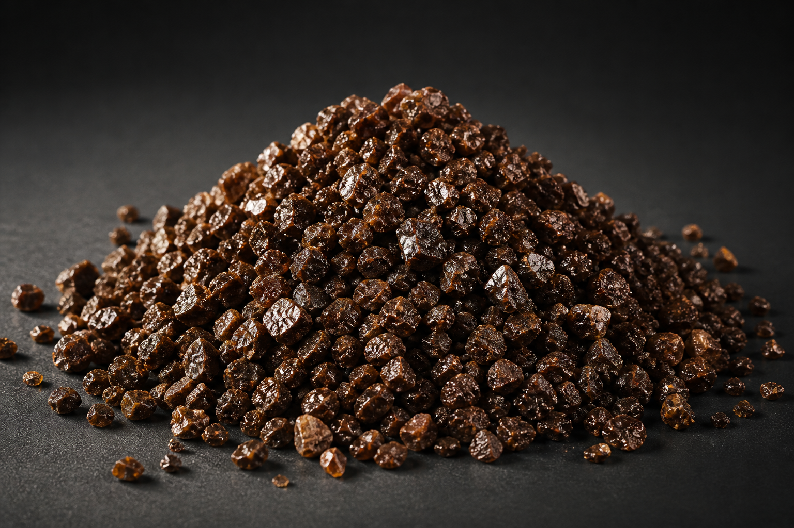
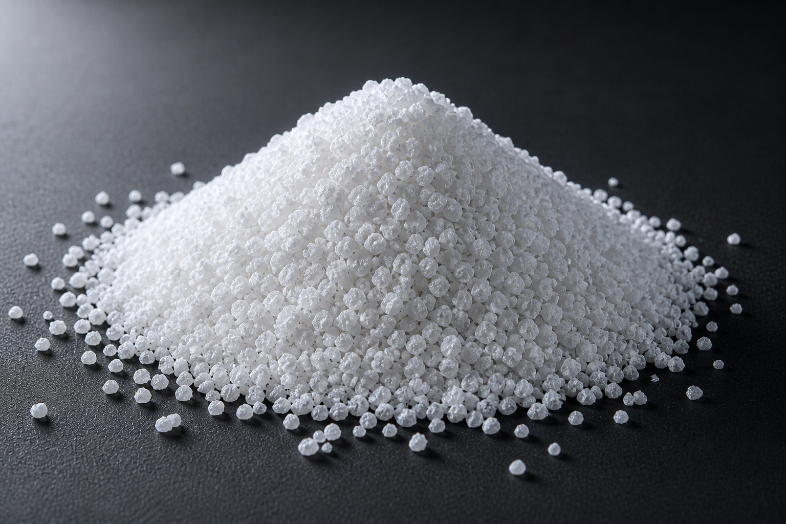
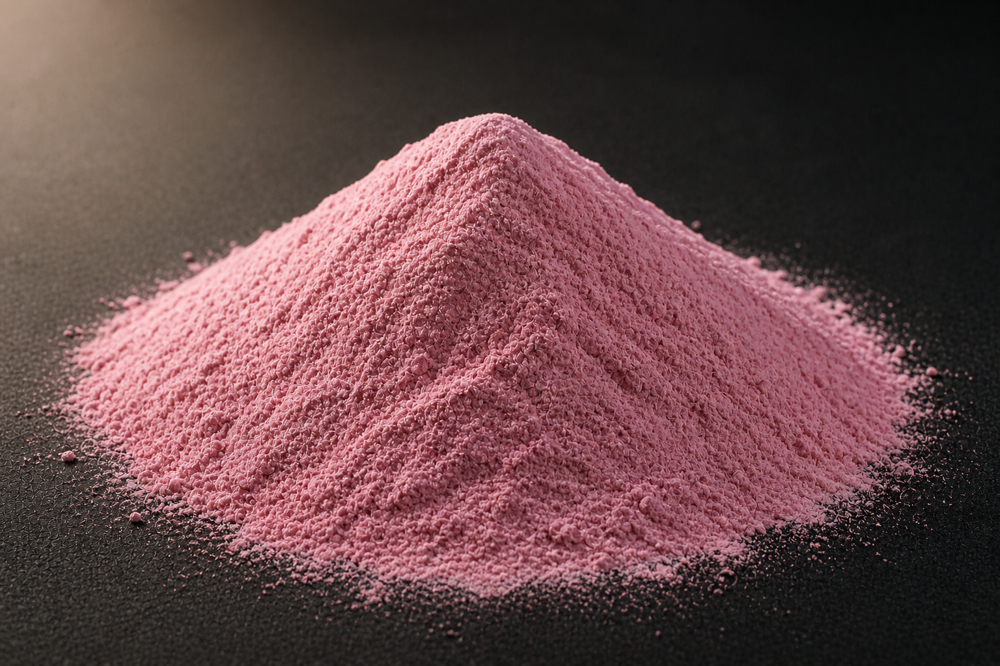
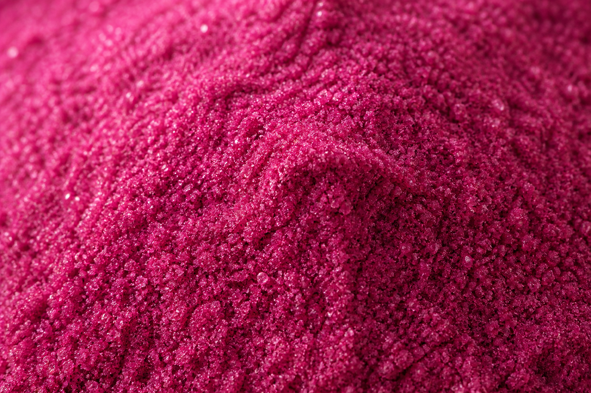
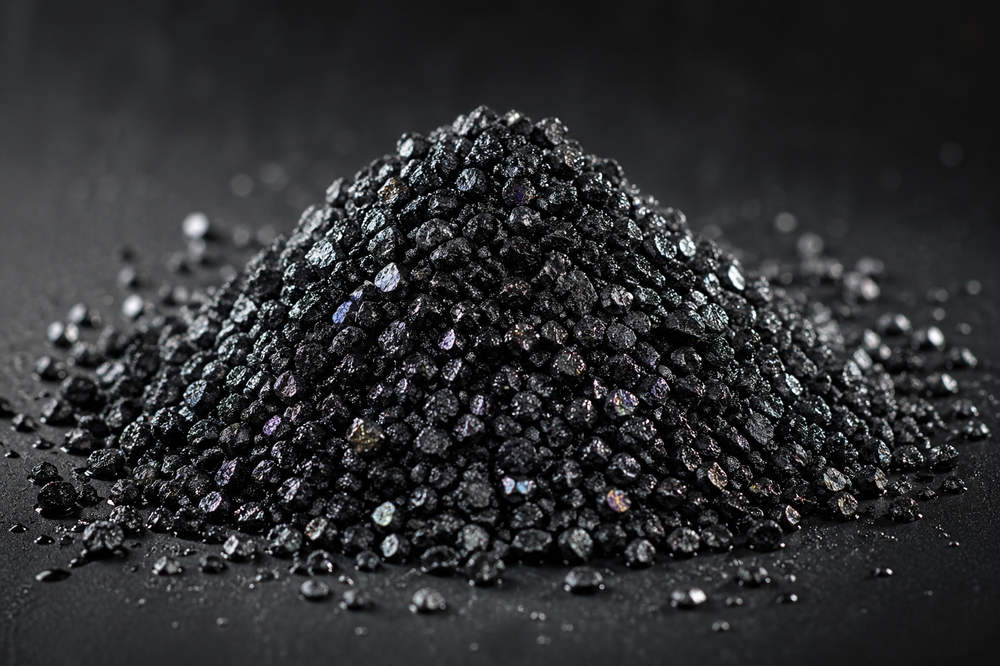
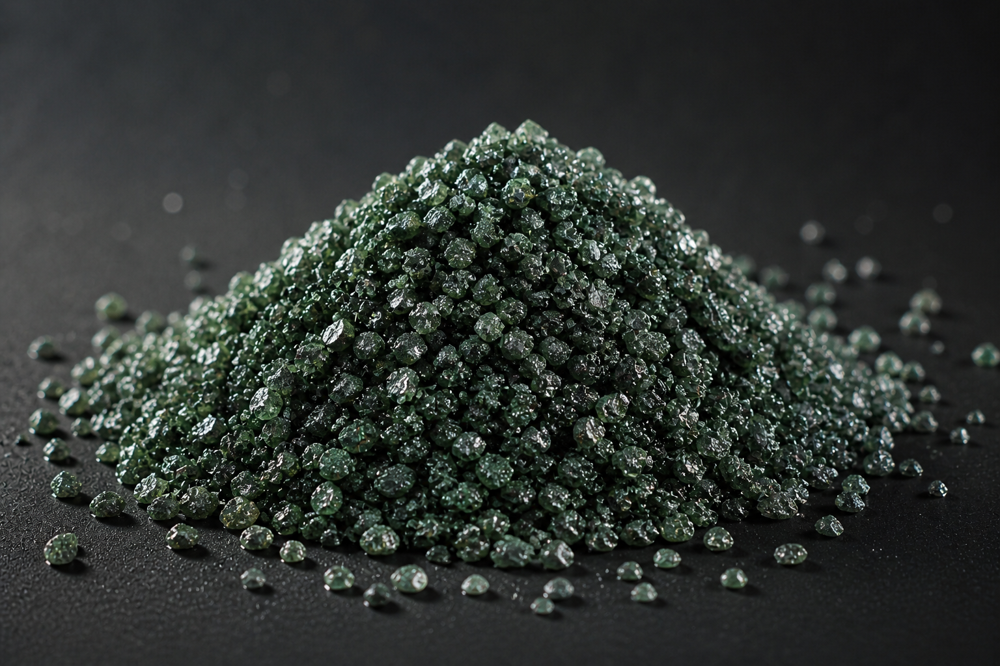
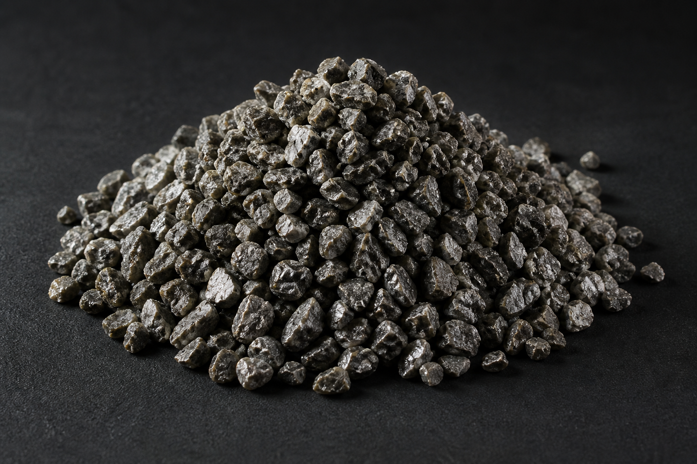
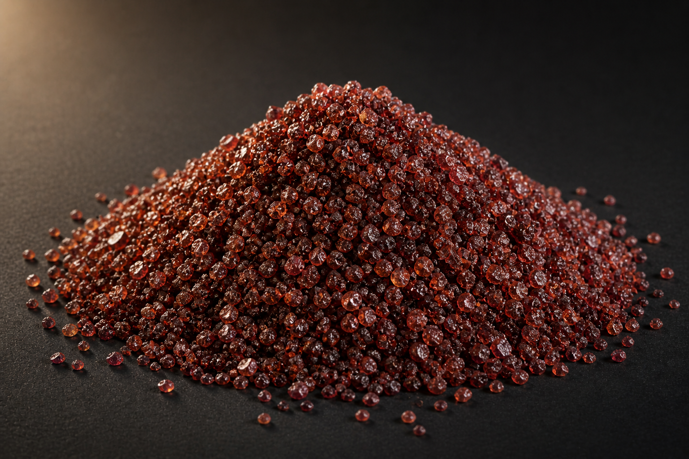
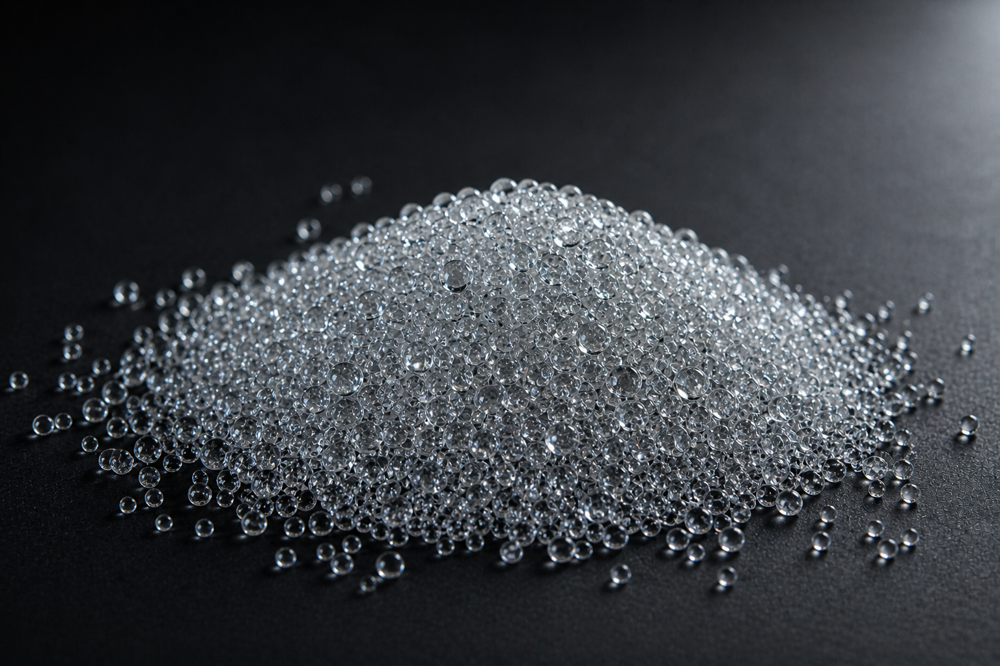

Brown Fused Alumina
The workhorse of bonded and coated abrasives. Tough, blocky crystals fused from calcined bauxite — high impact resistance and consistent friability across the F-grit range.

White Fused Alumina
Ultra-pure α-Al₂O₃ fused from Bayer alumina. Sharp, friable crystals — ideal for precision grinding of hardened steels, stainless, and HSS where contamination must be near-zero.

Pink Fused Alumina
Chromium-doped white fused alumina. The Cr₂O₃ addition (≈0.5%) increases toughness and friability characteristic — sharp self-renewing edges with cooler grinding action.

Ruby Fused Alumina
High-Cr₂O₃ fused alumina (≥2%). Deep crimson, exceptionally hard and tough — engineered for heavy-duty grinding of hardened tool steels, bearing races, and difficult-to-grind alloys.

Black Silicon Carbide
Fused from quartz sand and petroleum coke. Sharper and harder than fused alumina — preferred for grinding cast iron, non-ferrous metals, glass, ceramics, and stone.

Green Silicon Carbide
Higher purity SiC manufactured under more rigorous conditions. Harder, more friable, and chemically more stable than the black grade — used for tungsten carbide tooling, optical glass, and precision honing.

Zirconia Alumina
Co-fused ZrO₂–Al₂O₃ eutectic. Exceptional toughness and self-sharpening behaviour under high-pressure grinding — the abrasive of choice for stock removal on stainless and carbon steels.

Garnet
Natural almandine garnet — a hard, sharp, chemically inert silicate. Low free silica makes it the safe choice for blasting and the dust-free choice for waterjet cutting.

Glass Bead, Sand & Grit
Solid soda-lime glass spheres for shot peening, satin-finishing, deburring, and contamination-free surface cleaning. Recyclable up to 30 cycles in closed-circuit blast cabinets.
